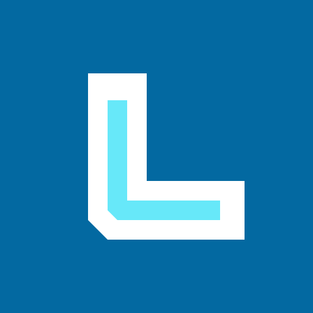

EA 的簡約版
直角雙 L
保留雙 L，去掉斜切。
更俐落、齊整的工程識別。
LOUIS LI / ROUND 02 · A + B
保留你喜歡的雙 L、單 L 與切角，再調整結構、配色位置與層次。
保留雙 L，去掉斜切。
更俐落、齊整的工程識別。
把 Louis、Li 並排放好。
像自己的姓名縮寫，直接好認。
把青色移到起筆位置。
雙切角讓單 L 更有輪廓。

厚實白 L 裡，留一道青色路徑。
簡約外形，也藏著工程細節。
先選 E、F、G 或 H，也可以混搭喜歡的細節。現用 Logo 維持 A。回看第一輪 A–D